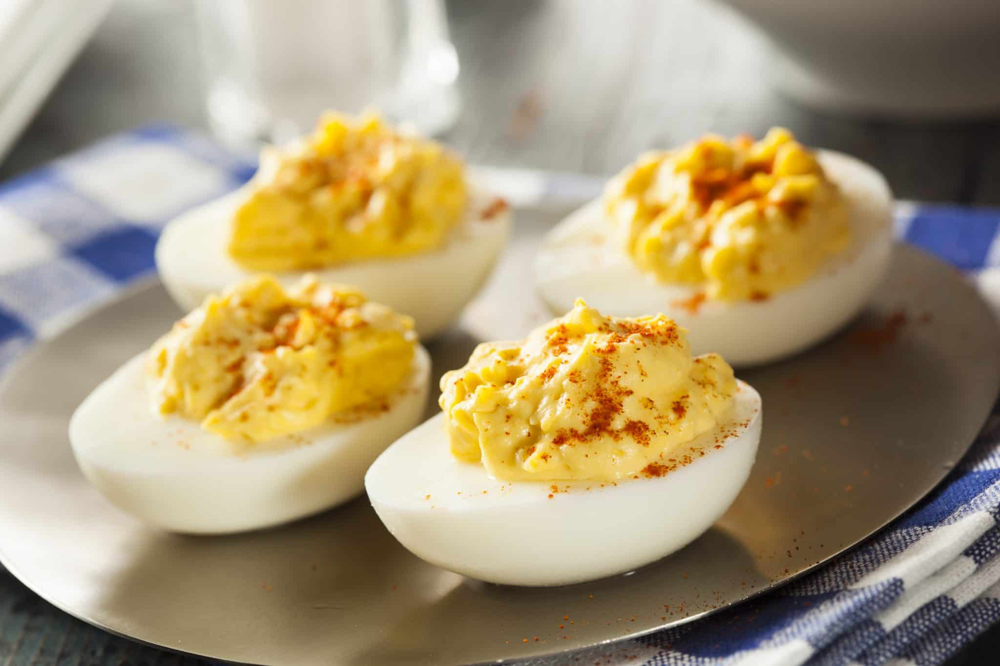

Deviled Eggs

Classic, delicious, and easy.
A simple but great appetizer made for festive occasions! Classic Deviled Eggs are
ultra-delicious, and sure to be a star at any get together.
Ingredients:
- 6 Large Eggs
- 2Tablespoons Mayonnaise
- Red's Sea Salt
- Garnish Paprika
Steps:
- Place eggs in a single layer in a saucepan; add water. Bring to a boil. Let stand for
15minutes.
- Remove saucepan from heat and place eggs in bowl with cold water. Let sit for 5minutes.
- Firmly tap each egg on the counter until cracks form all over the shell. Peel under cold
running water.
- Cut eggs in half lengthwise, and carefully remove yolks. Mash yolks with mayonnaise. Add
salt (and other seasonings if desired). Stir well.
- Spoon egg yolk mixture into egg whites. Garnish with paprika.